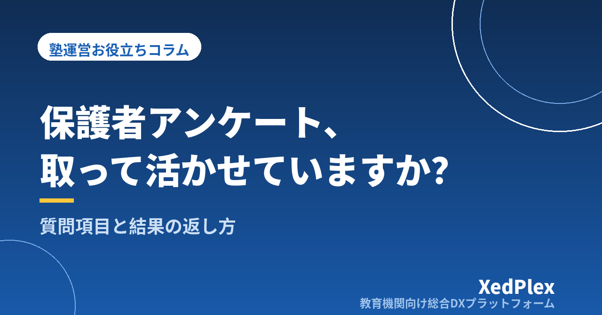

塾の保護者アンケートの作り方と活かし方｜質問項目・実施時期・回収率を上げる工夫と「聞きっぱなし」にしない返し方

「保護者が本当はどう思っているのか知りたい」「退塾の申し出を受けてから、不満があったと初めて知った」。個人塾の塾長なら、一度はそんな思いをしたことがあるのではないでしょうか。日々の送迎や面談で話す機会はあっても、面と向かっては言いにくいこともあります。
そこで保護者アンケートを取ってみたものの、回答が少なかったり、集めた声を活かせないまま次の年になったり。この記事では、小規模塾でも無理なく続けられる保護者アンケートの作り方と、結果を運営に返すまでの流れを整理します。
保護者アンケートが「やっただけ」で終わる3つの原因
アンケートがうまく活かせないとき、原因はおおむね次の3つに分けられます。
- 目的があいまい：満足度も要望も講習の希望も一度に聞こうとして、質問が増え、結果を見ても何を変えればいいか分からなくなります。
- 答えにくい：質問が多い、紙で持ち帰りが必要、記名だと書きにくい。こうした小さな負担で回収率が下がります。
- 結果を返していない：回答しても何も変わらなければ、保護者は「書いても意味がない」と感じ、次回はさらに答えてもらえなくなります。
裏返すと、目的を1つに絞る・答えやすくする・結果を返すの3点を押さえれば、小さな塾でも十分に役立つアンケートになります。
目的を1つに絞り、実施時期を決める
まず「このアンケートの結果で何を決めるのか」を1つ決めます。目的によって、適した時期と聞くことが変わります。
| 目的 | 実施時期の目安 | 結果で決めること |
|---|---|---|
| 塾全体への満足度・要望を知る | 年1回（2学期の途中など、講習や新年度の準備の前） | 翌年度の時間割・連絡方法・運営ルールの見直し |
| 季節講習の希望を聞く | 講習の案内を作る1〜2か月前 | 講習の日程・コース・定員 |
| 入塾後の印象を聞く | 入塾から1〜2か月後 | 入塾直後のフォローや説明の改善 |
| 新しい取り組みへの反応を聞く | 始めてから1〜2か月後 | 続ける・やめる・形を変えるの判断 |
満足度のアンケートは、面談の少し前に置くのもおすすめです。気になる回答があった家庭とは、面談でそのまま話を深められます。面談の時期の決め方は塾の保護者面談は年何回・いつ行う？でまとめています。
質問項目の作り方｜10問以内・5分で答えられる量に
質問は10問以内、スマートフォンで5分程度で答えられる量を目安にします。選択式を中心にして、自由記述は1〜2問に絞ると、回答の負担も集計の手間も減ります。満足度アンケートなら、次のような構成が使いやすいです。
| 分類 | 質問の例 | 形式 |
|---|---|---|
| 全体 | 塾に通わせてよかったと感じていますか | 4段階（そう思う〜そう思わない） |
| 学習 | お子さまの学習への取り組みに変化はありましたか | 4段階＋「分からない」 |
| 授業・講師 | 授業の内容や講師の対応に満足していますか | 4段階 |
| 連絡 | 塾からの連絡の量・内容はちょうどよいですか | 多い／ちょうどよい／少ない |
| 連絡 | 塾からの連絡で、もっと知りたいことはありますか | 複数選択（学習内容・成績・塾での様子・行事予定など） |
| 通塾 | 曜日・時間帯・送迎などで困っていることはありますか | はい／いいえ＋任意の記述 |
| 費用 | 月謝・諸費用の案内は分かりやすいですか | 4段階 |
| 自由記述 | 塾へのご意見・ご要望があればお書きください | 自由記述（任意） |
「連絡の量」は、塾側の感覚と保護者の受け止め方がずれやすい項目です。結果を連絡の設計に活かす考え方は塾の保護者連絡、適切な頻度は？を参考にしてください。
避けたい聞き方
- 2つのことを1問で聞く：「授業と講師に満足していますか」では、どちらへの評価か分かりません。分けて聞きます。
- 答えを誘導する：「先日始めた○○は便利になりましたか」より「○○について、どう感じていますか」のほうが本音が出ます。
- 真ん中の選択肢を多くする：5段階だと「どちらともいえない」に集まりやすいため、4段階にすると傾向が見えやすくなります。
- 変えられないことを聞く：すぐには変えられない教室の場所や広さなどを聞くと、期待だけを生んでしまいます。
回収率を上げる配り方と、匿名・記名の選び方
匿名か記名か
満足度や不満を聞くアンケートは、匿名を基本にすると本音が書きやすくなります。一方、講習の希望など個別に対応が必要なものは記名でないと使えません。迷う場合は匿名で実施し、最後に「個別にご相談を希望される方は、お名前をご記入ください（任意）」という欄を設ける方法があります。
名前や連絡先を書いてもらう場合は、何のために使うかを冒頭に書き添え、回答データの保管場所と閲覧できる人を決めておきます。小規模塾での個人情報の扱いは塾が守るべき生徒の個人情報管理の基本で整理しています。判断に迷う点は、専門家や所轄機関に確認してください。
回収率を上げる5つの工夫
- Webフォームで配る：紙より手間が少なく、集計も自動でできます。紙を希望する家庭向けに、教室に数枚用意しておくと安心です。
- 普段の連絡手段で送る：保護者がいつも見ている連絡の流れの中で、リンクを送ります。
- 目的と所要時間を最初に書く：「来年度の時間割を見直すため」「約5分」と書くだけで、答える理由ができます。
- 回答期間は1〜2週間：長すぎると後回しにされ、短すぎると答えそびれます。
- 締切の数日前に1回だけ再案内する：何度も催促すると負担になるので、全体への再案内は1回にとどめます。
保護者の皆さま
いつもありがとうございます。来年度の時間割や連絡方法を見直すため、アンケートへのご協力をお願いいたします（約5分・無記名）。いただいた声は、結果のまとめとあわせて○月中にお知らせします。
回答期限：○月○日（○）
結果を「聞きっぱなし」にしない集計と返し方
アンケートで一番大切なのは、回答を集めた後です。次の流れで、結果を運営と保護者に返します。
| ステップ | やること |
|---|---|
| 1. 集計 | 選択式は割合で見る。自由記述は「授業」「連絡」「費用」「通塾」などに分けて書き出す |
| 2. 仕分け | 「すぐ変える」「検討する（時期を示す）」「今は変えられない（理由を説明する）」の3つに分ける |
| 3. 結果のお知らせ | 回答のまとめと、変えること・変えないことを1枚にまとめて全保護者に送る |
| 4. 実行と記録 | 変えたことを年間の予定に書き込み、次回のアンケートで同じ質問をして変化を見る |
結果のお知らせでは、「いただいた声→塾の対応」をセットで書くのがポイントです。たとえば「連絡が少ないという声が多かったため、毎月の学習の様子のお知らせを始めます」のように書くと、保護者は自分の声が届いたと感じられます。すべての要望に応えられなくても、「今回は見送る理由」を書いておけば、むしろ信頼につながります。
厳しい意見への向き合い方
自由記述には、厳しい意見が書かれることもあります。匿名の回答で書き手を探そうとするのは避け、個人ではなく仕組みの問題として受け止めます。同じ内容が複数あれば、優先して見直す候補です。個別の苦情として対応が必要な内容なら、塾への保護者クレーム対応の手順で紹介している記録と再発防止の考え方が使えます。
また、アンケートの結果は、退塾につながりやすい不満を早めに見つける材料にもなります。日頃の接点づくりとあわせて、退塾を防ぐ保護者コミュニケーションの仕組みも参考にしてください。
まとめ
保護者アンケートは、目的を1つに絞り、10問以内・5分で答えられる形にして、結果を「声→対応」のセットで返すことで、小さな塾でも運営の改善に直結する道具になります。全体向けは年1回を基本に、面談や新年度の準備の前に置くと、結果をすぐに活かせます。
まずは今年度、「連絡の量と内容」についての短いアンケートから始めてみてください。保護者が何を知りたいかが分かるだけでも、日々の連絡の手応えが変わるはずです。
この記事を書いた運営より
私たちは、個人経営・小規模の学習塾向けに、生徒管理・QRコードでの入退室記録・月次請求・保護者へのLINE/メール通知・AIによる学習支援までをひとつにまとめた教育機関向け総合DXプラットフォーム「XedPlex（ゼドプレックス）」を開発・提供しています。初期費用は0円、料金は生徒1名あたり月額300円（税込）から。生徒50名の塾なら月15,000円（税込）です。全国8つの教室で導入されており、導入塾には紹介ホームページの無料作成も行っています。機能の詳細説明はこちら。
XedPlexの詳細を見る